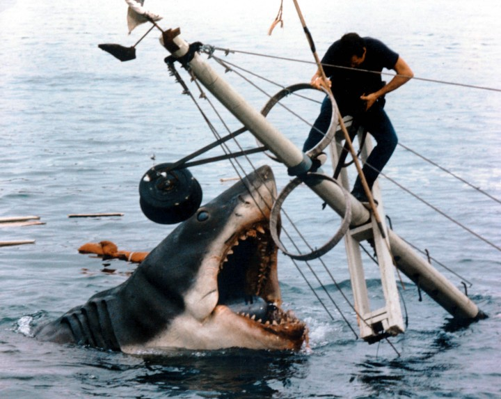
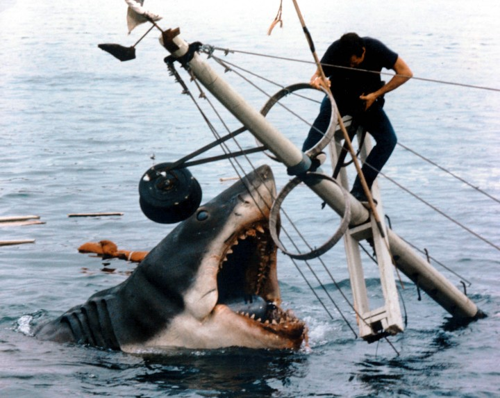

Sharks Intro
Sharks are fascinating creatures that have inhabited Earth's oceans for more than 400 million years. They have a reputation as ruthless predators, but the reality is much more complex. With more than 500 different species, sharks play a vital role in marine ecosystems and are essential to the health of the oceans.
Sharks, often feared and misunderstood, are fundamental to the balance, health and biodiversity of marine fauna. Through conservation and responsible management, we can ensure that these magnificent predators continue to play their crucial role in the oceans for generations to come.
The importance for the marine environment
Sharks, often portrayed as ruthless predators, play a fundamental and complex role in marine fauna, acting as top predators, regulating populations, ensuring the health of ecosystems and promoting biodiversity.
- Top Predators: Sharks hunt diverse species, from fish and crustaceans to marine mammals. This predation controls the populations of their prey, preventing overpopulation and resource depletion.
- Ecological Balance: By controlling prey populations, sharks ensure that food resources are distributed evenly among different species, preventing overexploitation and habitat degradation.
- Trophic Cascade: Predation by sharks generates a cascade effect throughout the food chain, influencing the health of several species, from plankton to large cetaceans.
Are Sharks, Enemys?
 

Horror films featuring sharks can have a negative impact on public perception of these animals, perpetuating myths and hindering conservation efforts. Through conscious consumption of content, support for protection and education organizations, we can deconstruct these stereotypes and build a fairer and more harmonious relationship with sharks, recognizing their crucial role in the oceans and their need for protection.
Demonization and Exaggerations:
-
Misrepresentation
Films often portray sharks as ruthless predators and serial killers, ignoring the complex reality of their behavior and the ecological importance they play
-
Exaggerations and Distortions
Exaggerated scenes of shark attacks, often based on rare and exceptional cases, fuel fear and misinformation, ignoring the peaceful nature of most species.
-
Lack of Context
Films rarely provide context about the importance of sharks to marine ecosystems, their vulnerability to overfishing and other threats, perpetuating the simplistic view that they are dangerous and undesirable.
Negative Consequences
-
Increased Fear and Hostility
Horror films can fuel irrational fear of sharks, leading to hostile behavior and even attacks on these innocent animals.
-
Harm to Conservation
Negative views of sharks hinder conservation efforts, reducing support for protective measures and increasing tolerance to overfishing and other threats.
-
Impact on Sustainable Fishing
The demonization of sharks can harm the development of sustainable fishing practices, making it difficult for humans and these animals to coexist peacefully.
Horror films featuring sharks can have a negative impact on public perception of these animals, perpetuating myths and hindering conservation efforts. Through conscious consumption of content, support for protection and education organizations, we can deconstruct these stereotypes and build a fairer and more harmonious relationship with sharks, recognizing their crucial role in the oceans and their need for protection.
Recognition
Shark Video Background made by Adrien JACTA
Photo by Daniel Torobekov
Photo by Alberto Perea